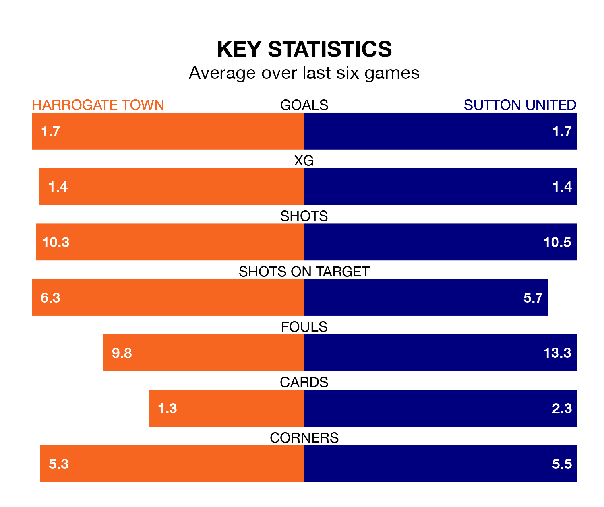

Sutton United travel to Harrogate Town on Saturday in EFL League Two.
The visitors come into the game on the back of a defeat in their last match, having lost to Stockport County 3-1 at home, with a goal from Charlie Lakin.
Harrogate, meanwhile, won their last match, 1-0 against Grimsby Town, with their goal scored by George Thomson.
Sutton are 22nd in the table after 43 games, of which they have won nine and drawn 12, earning 39 points.
Harrogate are 11 places ahead of United in 11th, with 17 wins and 10 draws putting them on 61 points.
In the last 10 years, Harrogate and Sutton have played each other on 10 occasions. Harrogate won two of them, Sutton seven, and they drew once.
On average, Harrogate scored 0.9 goals and the Us 1.5 in those matches.
Their last meeting was on January 30, when Harrogate won 2-1 away.
With 51 goals in 43 games so far this season, the Us are scoring at below the league average rate with 1.2 goals per game. And they are conceding more than average, letting in 76 goals at a rate of 1.8 per game.
Town are also below average scorers, with 1.2 goals per game, compared to a league average of 1.5. They have conceded 1.4 goals per game.
The hosts are in reasonable form in EFL League Two, with three wins and two draws from their last six games.
With four wins and two losses over that period, the away side's form is slightly better – they have taken 12 points from 18, compared to Harrogate's 11.
Harrogate's Matty Daly is among the league's most creative players, racking up nine assists in 37 appearances so far this season, and holding fourth spot in EFL League Two's assist charts.
For Sutton, Josh Coley and Aiden O'Brien have set up the most goals, having laid on five assists apiece to date.
Updated: 10:01 (UTC), 12/04/24